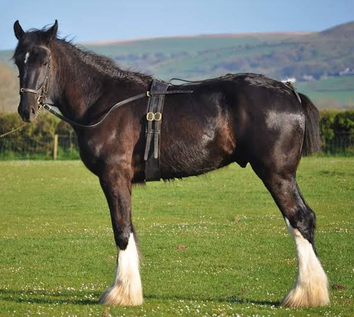
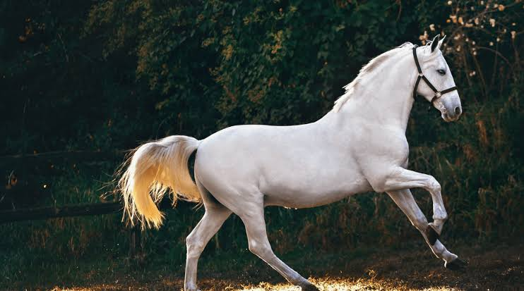

🐴Horse Riding at Alma’s Animal Adventure At Alma’s Animal Adventure, we are proud to offer a lovely horse riding area where visitors can enjoy spending time with our two beautiful horses, Bowie and Diva. Both Bowie and Diva are friendly, gentle and well-trained, making them wonderful horses to meet and ride. They have been carefully taught and are used to being around people, helping create a fun and enjoyable experience for everyone. Whether you are an experienced rider or just love horses, we want everyone to feel welcome and enjoy a special time with Bowie and Diva. We also have a handy price chart showing the different age groups and prices, including our family prices, so you can easily find the option that works best for you.🐴

